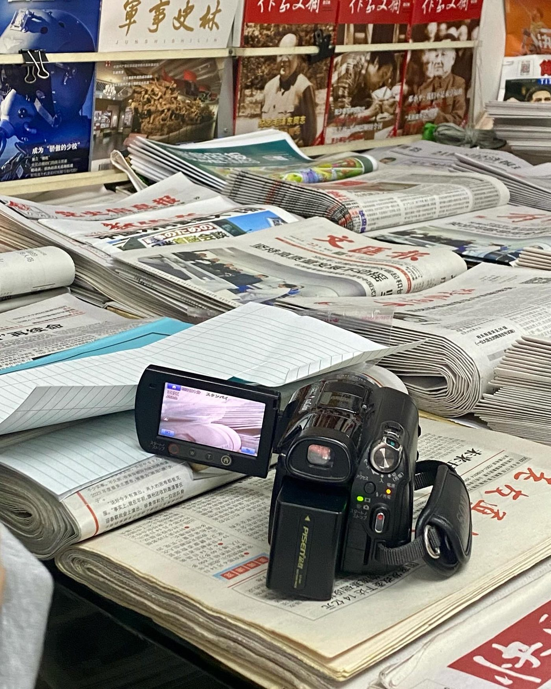
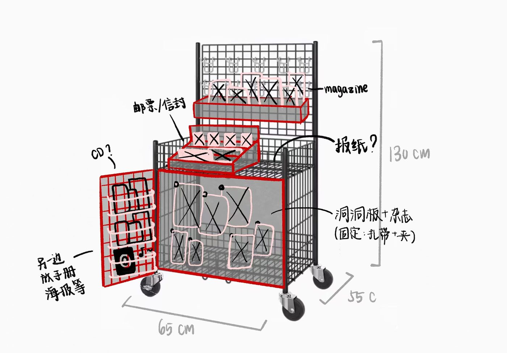
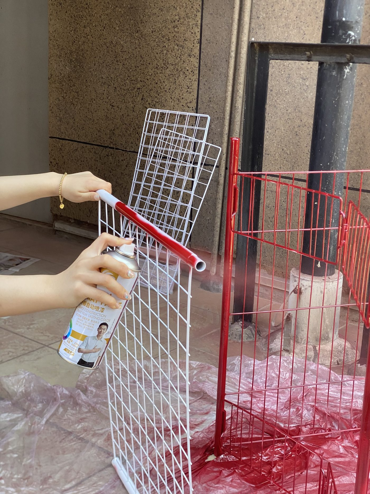
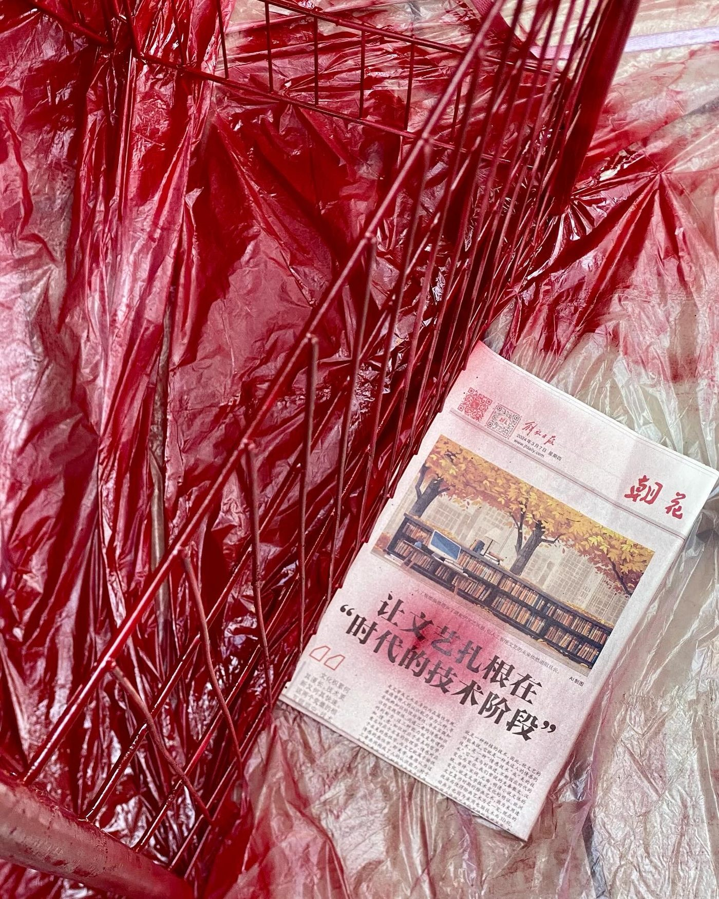
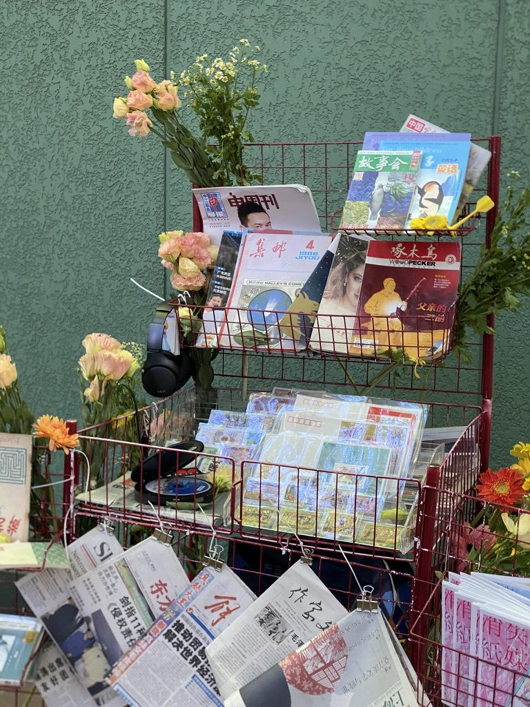

Swipe or use the arrows to flip through the booklet pages.
01 // Instructional Booklet
Caring Booklet: A Simple Guide to Daily Applications
Designed to guide through everyday smartphone tasks: digital payment with WeChat and AliPay, riding the bus and metro, navigating with Amap, and grocery shopping on Hema. Gave out printed copies during our street event to help older adults feel at ease with digital technology around them.
Outcome524Copies Distributed

02 // Preparation
Interview & Collection
To prepare for the portable newsstand and gather the items we needed, we visited one of Shanghai’s last remaining newsstands, which was scheduled to close in 2025 and has since reopened in 2026. We interviewed its owner, Jiang Jun, who had planned to retire years earlier but chose to stay for his customers. He shared his views on how paper and new media have developed side by side. While we were there, regulars kept walking in, and he already had each person’s newspaper set aside and ready. We also visited vintage markets and antique stores, where we collected paper currency, postage stamps, zines, comic books and other pieces of print history for our cart.
“Sometimes I feel tired, but I also feel this job is truly worthwhile.”
— Jiang Jun, newsstand owner
02 // Preparation
Final Assembly
To recreate the newsstand, we started with a display cart. Shanghai's newsstands were known for their bold red color, so we spray painted the cart red to bring back that familiar sight. We then filled it with the magazines, newspapers, zines, stamps, and other elements we had collected, along with CDs and tapes. We also bought flowers to give to the older adults who stopped by, a small gesture to thank them for sharing their time and memories with us.




03 // Street Event
Portable Newsstand
In May 2024, we took the project to the streets. A portable cart was filled with paper magazines, newspapers, posters, CDs and tapes that older adults once knew. Music from that era drew passersby’s attention, and many enjoyed reading through the newspapers again. We interviewed and spent time with them, hearing about their daily experiences with and opinions on technology. We also gave out printed copies of the Caring Booklet, not only to older adults but also to younger generations who wanted to share it with their parents. The event allowed older adults to reconnect with a familiar lifestyle and feel more at ease with the digital world around them.